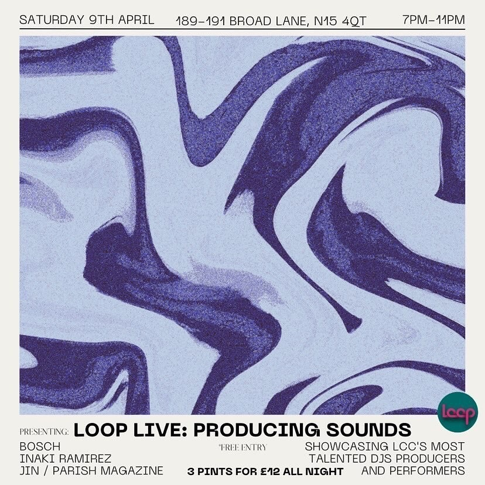
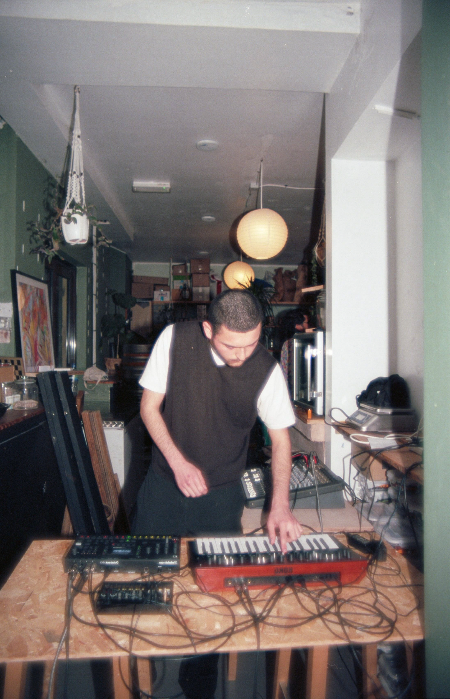

Performance Loop Cafe9/4/2022
I was invited to play in an LCC showcase at Loop Cafe. The event featured acts from a wide array of artists, spanning multiple genres and performance techniques. This event had the purpose of presenting various debuting student sound artists and giving them a space to experiment and be heard.
My performance consisted of a down tempo live set, in which I improvised melodic lines and rhythms with a drum machine and a poly-phonic synthesiser. I sampled and looped the material, to later add more layers and variations.